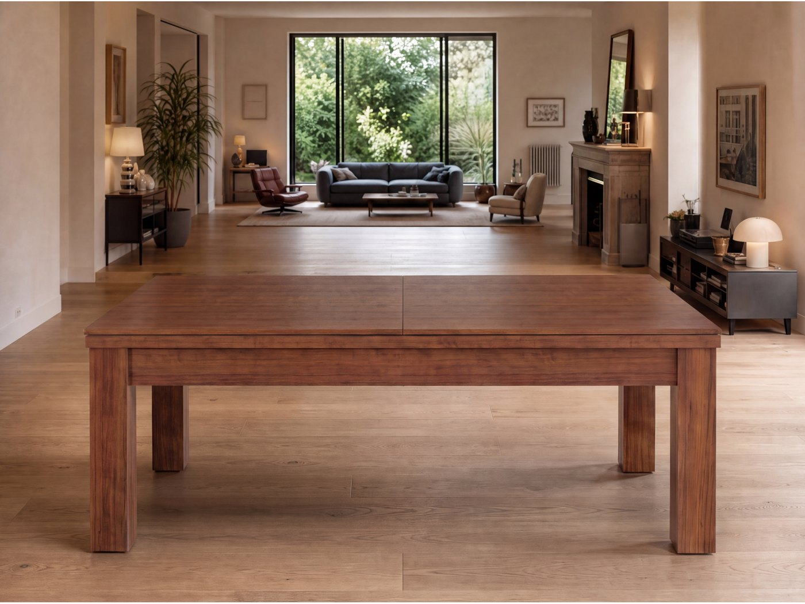
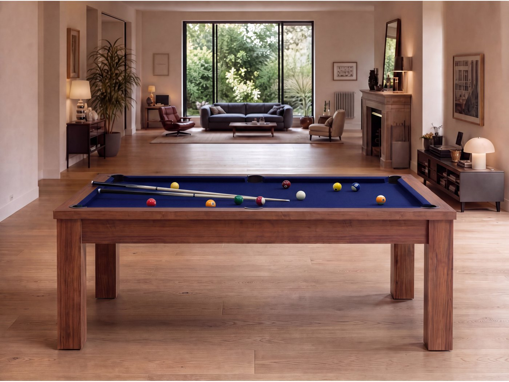
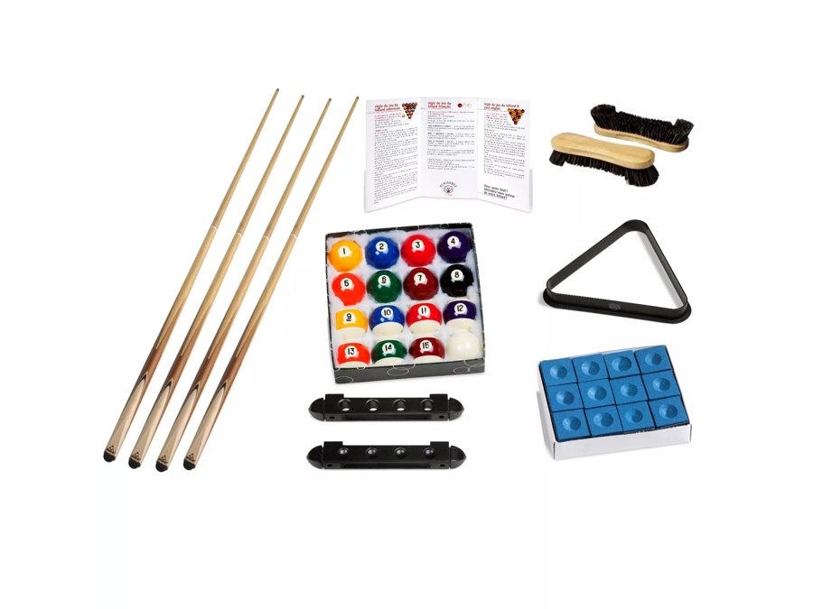

Devis n° 2026-0142
M. et Mme Martin · 27 novembre 2026
M. et Mme Martin · 27 novembre 2026
Votre billard
Billard convertible en table · Référence Premium


Modèle similaire au devis, photo non représentative de votre configuration.
Le meilleur rapport qualité-prix du marché en 2,10 m, la taille standard du billard.
01
Une pierre naturelle d'un seul tenant : elle ne gonfle pas et ne se déforme pas avec l'humidité, contrairement au MDF ou à l'aggloméré.

02
16 billes, 4 queues, triangle, craies, brosse et porte-queue.

03
Le matériau des plans de travail de cuisine : il résiste aux chocs, aux rayures et aux taches.

Inventeur du convertibledepuis 1985
3e générationd'ébénistes depuis 1946
Livraison offertepartout en France
Paiement en 3x ou 4xsans frais avec Oney